Section 2: Research Synthesis
As responses were grouped and analyzed, larger behavioral patterns began to emerge.
Key Patterns Identified
- Education & Learning
- Product Comparison
- Understanding Ball Motion
- Guidance & Confidence
- Connection to the Sport


Educate, inform, and entertain — not just about Storm products, but about the sport of bowling itself. Every piece of content adds value while reinforcing the brand.
Empower users with tools and clarity. Engage them through interaction and storytelling. Excite them with thoughtful design and brand energy.
Transform StormBowling.com the go-to destination for bowlers. A place for learning, exploring, and connecting with the brand.
Understanding why bowlers visit the platform, what they expect from a bowling brand website, and where friction existed across education, product understanding, and community engagement.
Designing connected learning pathways that helped bowlers progressively understand bowling technology, lane play, surface adjustments, ball motion, and technical terminology.
Restructuring the platform experience to support scalability, discoverability, browsing behavior, and clearer organizational pathways across products, education, and community content.
Investigating how bowlers research equipment, compare products, build arsenals, and navigate complex purchasing decisions — leading to scalable motion language, comparison systems, and reaction-based tools.
"What are users actually coming to StormBowling.com for?"
Survey Responses
Rapid Research Sprint
Responses captured in users' own words
As responses were grouped and analyzed, larger behavioral patterns began to emerge.
Users weren't just visiting the site to browse products — they were looking for education, guidance, comparison, and a deeper understanding of bowling equipment and the sport itself.
While users consistently expressed a desire for learning and product guidance, the website primarily functioned as a static product catalog with limited educational pathways or decision-support tools.

A product catalog with no educational content, no learning pathways, and no tools to help users understand equipment or the sport.
Users struggled to compare bowling balls and understand technical differences between products.

The current experience lacked product guidance and decision-support systems, making product exploration overwhelming for many users.

The future-state experience focused on helping users better understand products through guided education, comparison tools, and clearer product communication.
Users wanted clearer learning pathways around bowling technology, lane play, surface prep, and ball motion.

The existing experience provided limited access to educational content, making it difficult for users to build a deeper understanding of bowling technology, lane play, and equipment behavior.

The future-state experience focused on creating connected learning pathways that helped users better understand bowling technology, equipment behavior, and lane play through structured educational content.
Users wanted more visibility into Storm's athletes, culture, events, and company content.
While Storm had a strong presence within bowling culture, the website offered limited opportunities for users to engage with the broader community, brand identity, athlete stories, and ongoing events surrounding the company.
The future-state direction focused on transforming the website from a primarily catalog focused platform into a more connected ecosystem that better reflected Storm's culture, athletes, events, and community presence.
Phase 1 established the strategic foundation for the broader website transformation by identifying key gaps in education, product understanding, and community engagement across the platform.
These findings directly informed the creation of:
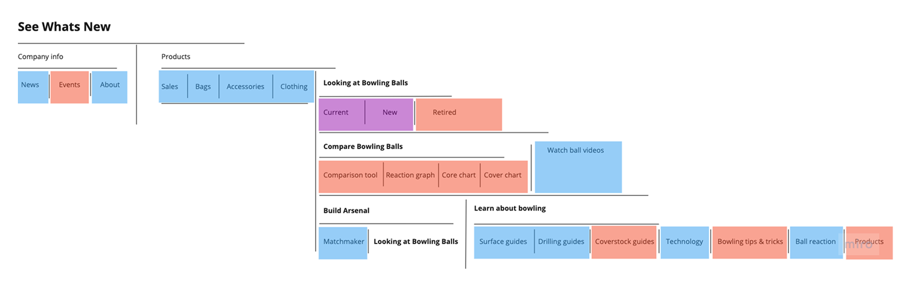
Rather than waiting for larger initiatives to be completed, several improvements were implemented immediately based on the opportunities identified during Phase 1. These efforts focused on content visibility, product discovery, educational access, and platform engagement.
Content Strategy · Platform Engagement
Reinforce recurring engagement and make fresh content easier to discover.

Content Architecture · Learning Pathways
Create clearer learning pathways for bowlers looking to improve their understanding of equipment and the sport.

Product Comparison · Information Architecture
Make bowling balls easier to browse, compare, and understand.


UX Improvements · Platform Strategy
Better align the platform experience with evolving user needs and content strategy.

Research revealed that users wanted clearer educational pathways for understanding bowling technology, equipment behavior, lane conditions, and technical terminology. However, the existing platform lacked structured learning systems that supported progressive understanding.
In response, I explored the creation of a scalable educational ecosystem designed to make technical bowling concepts more accessible, interconnected, and easier to navigate.
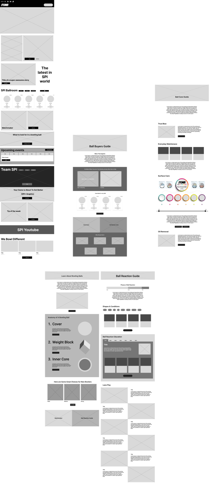
Mid-fidelity flows exploring how technical concepts could be organized into connected learning pathways across the platform.
Designing Connected Learning Pathways
Rather than treating educational content as isolated articles, the goal was to create interconnected learning pathways that allowed users to progressively explore bowling technology, equipment behavior, lane play, and ball motion.
| Bowling Basics | Setup & Performance | Technology |
|---|---|---|
| How a Ball Hooks | Arsenal Building | Coverstocks |
| Ball Components | Lane Play | Weight Blocks |
| Ball Care | Surface Adjustments | A.I. Core |
| Terminology | Layout Systems | T.I.P. |
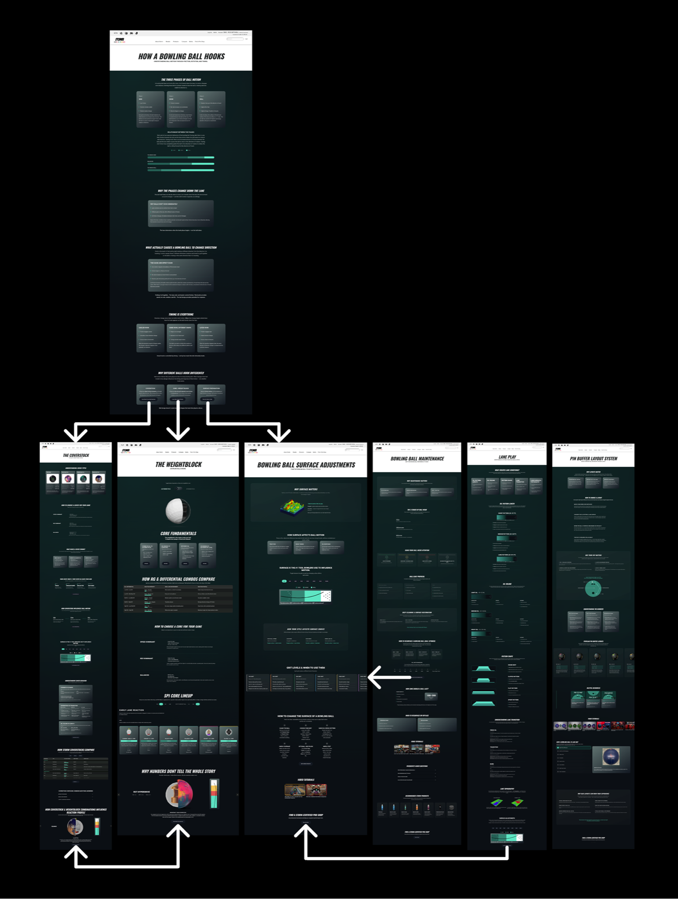
Educational pages were intentionally cross-linked to encourage deeper exploration and support progressive learning across technical bowling concepts.
Core educational page covering ball motion fundamentals.
Breaking down coverstock types and their effect on ball motion.
How core shape influences motion shape and timing.
Grit levels, surface prep, and how they change ball reaction.
Cleaning, oil extraction, and long-term equipment care.
Reading conditions, adjusting angles, and moving with the oil.
How pin-to-PAP distance affects motion shape and transition.
As educational content, product systems, and community-focused experiences expanded across the platform, the existing navigation architecture became increasingly difficult to scale and navigate effectively.

Top-level navigation space became increasingly constrained as the ecosystem expanded, limiting the ability to introduce deeper organizational layers and scalable submenu structures.
Top-level navigation space became increasingly constrained as the ecosystem expanded, limiting the ability to introduce deeper organizational layers and scalable submenu structures.
Top-level navigation space became increasingly constrained as the ecosystem expanded, limiting the ability to introduce deeper organizational layers and scalable submenu structures.
As the platform ecosystem expanded, I explored new organizational structures designed to better group products, educational systems, community content, and company information into more scalable navigation pathways.
| Products | Learn / Resources | Community | Company | Events |
|---|---|---|---|---|
| Balls | Ball Care | Athletes | About | Storm Youth Championships |
| Bags | Layouts | Youth | News | |
| Shoes | Surface | Social | Partners | |
| Apparel | Buyers Guide | Honor Scores | Regional Managers | |
| Accessories | Ball Anatomy |
The migration to a new CMS platform created opportunities to expand the navigation architecture through scalable mega menu systems, deeper hierarchy organization, and more flexible desktop and mobile navigation patterns.
Early navigation concepts focused on utilizing desktop mega menus for broader content exploration while introducing landing-page systems designed to simplify mobile navigation and create more consistent cross-platform pathways.
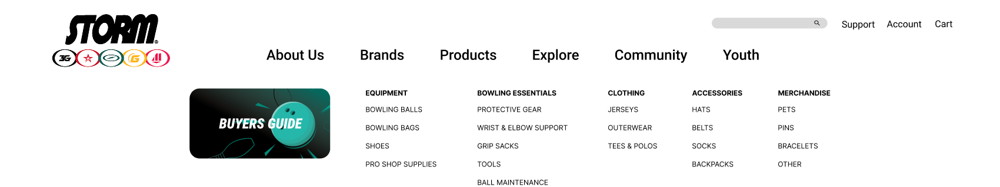
Desktop navigation concepts focused on broader ecosystem visibility through expandable mega menu systems that surfaced products, educational content, and community pathways more directly.
Mobile navigation concepts explored simplifying top-level pathways through landing-page systems designed to reduce nested navigation complexity and create more focused exploration flows.
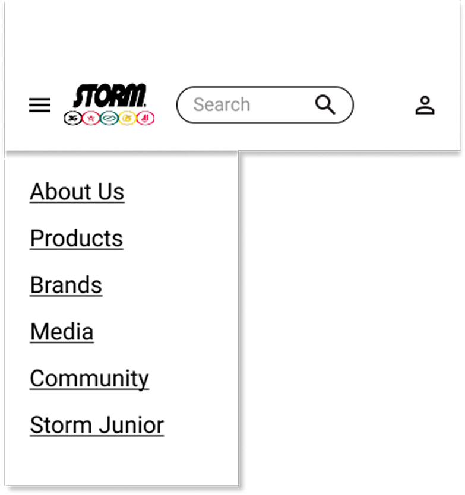
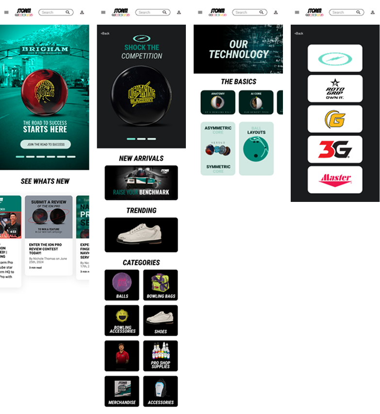
Desktop navigation concepts focused on broader ecosystem visibility through expandable mega menu systems that surfaced products, educational content, and community pathways more directly.


As the CMS transition evolved, implementation challenges and incomplete supporting systems limited the ability to fully realize the original navigation vision. These constraints ultimately exposed additional opportunities for refinement around hierarchy clarity, content organization, and cross-platform consistency.
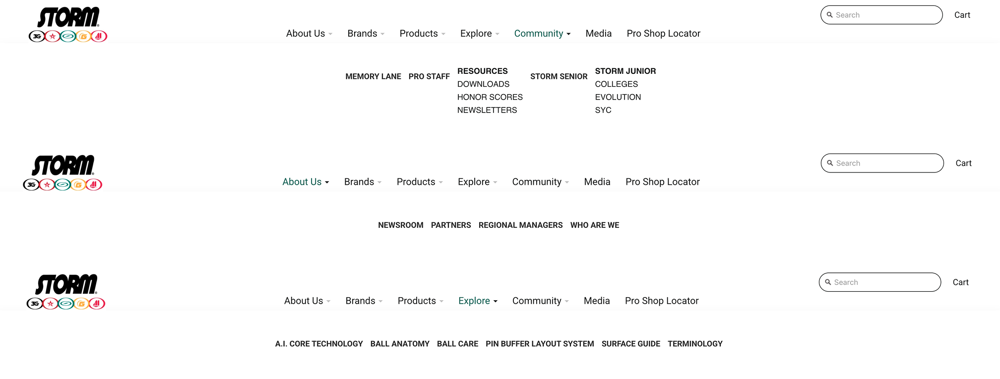
As the platform ecosystem expanded, I explored new organizational structures designed to better group products, educational systems, community content, and company information into more scalable navigation pathways.
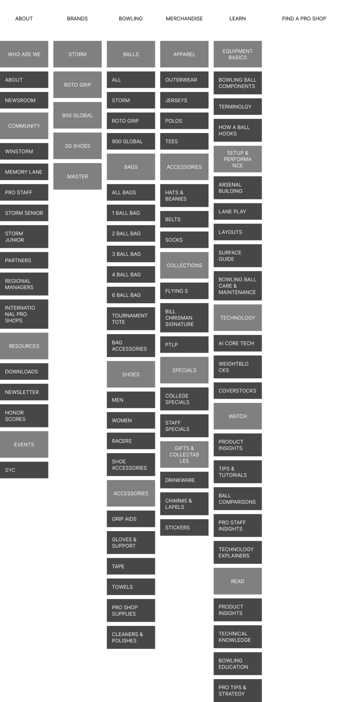
To validate the revised navigation architecture, I conducted a navigation tree test using UXtweak focused on discoverability, learnability, and educational content pathways across the evolving ecosystem.
_Page_3 1.png)

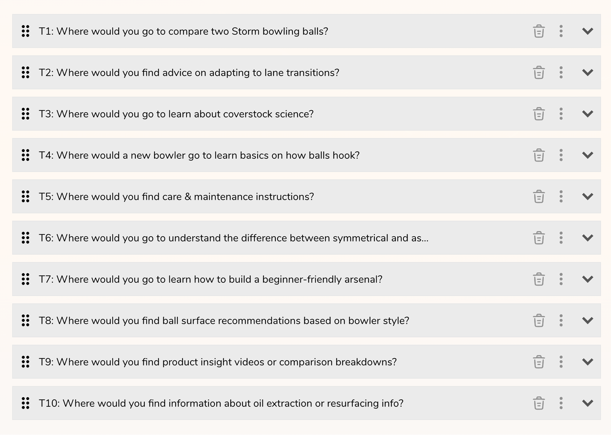
Tasks were intentionally designed to evaluate whether users could successfully navigate educational systems, technical bowling concepts, product-comparison pathways, and equipment guidance without prior knowledge of the navigation structure.
Based on testing observations, task pathways, and discoverability performance, several organizational and terminology refinements were identified within the educational navigation system.
Testing revealed that users frequently associated maintenance-related content with foundational bowling-ball knowledge rather than performance-tuning systems. Task pathways showed repeated navigation overlap between Setup & Performance and Equipment Basics.
Ball Maintenance → Setup & Performance
Ball Maintenance → Bowling Ball Basics
The original "Ball Maintenance" label created ambiguity around care, upkeep, resurfacing, and ownership-related guidance. To improve discoverability and terminology clarity the label was renamed.
Ball Maintenance
Bowling Ball Care & Maintenance
Testing revealed that "Equipment Basics" did not clearly communicate the educational scope of the category, which focused on fundamentals, terminology, anatomy, and ownership education.
Equipment Basics
Bowling Ball Basics
Understanding how bowlers research equipment, compare products, build arsenals, and navigate complex purchasing decisions.
Selecting a bowling ball is an unexpectedly complex decision-making process.
Users struggled to:
This initiative evolved into a large-scale UX research and systems-thinking project focused on understanding:
The project included:
| Behavioral Analysis | How bowlers evaluate and compare equipment |
| Decision Friction | Where uncertainty and confusion emerge |
| Mental Models | How users think about ball motion and fit |
| Arsenal Building | Understanding how bowlers organize equipment systems |
| Educational Systems | Identifying gaps in learning and product guidance |
| Product Taxonomy | Developing clearer motion and comparison language |
| Future Tooling | Exploring systems for comparison, guidance, and discovery |
As bowling-ball technology expanded, bowlers increasingly relied on fragmented research across YouTube videos, reviews, pro shop operators, and disconnected product information systems.
This document established the foundational research goals and investigative questions that guided the entire ball-buying research initiative.
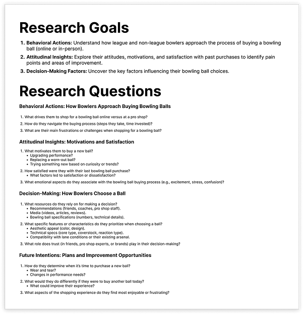
The study was structured around investigating:
The initial screener survey was designed to capture broad behavioral patterns, purchasing habits, confidence levels, and research behaviors across a large range of bowlers with varying experience levels.

Understand participant diversity, bowling experience ranges, and equipment familiarity across the respondent pool.

Identify how users navigate the bowling-ball research ecosystem and what external systems influence decision-making.

Understand the underlying factors that drive bowling-ball purchases and how users evaluate product fit.

Identify where uncertainty, reliance on guidance, and decision-making friction emerge throughout the buying process.
The screener survey established a quantitative foundation for identifying recurring behavioral patterns, confidence gaps, and research tendencies across a broad range of bowlers.
Before analyzing decision-making behaviors, I first needed to understand who these participants were and how involved they were in bowling overall.


The survey revealed a highly engaged audience:
These were not casual consumers. Most participants were deeply invested in the sport and actively purchasing equipment.
This established an important foundation for the research. Even highly experienced bowlers still appeared to experience friction during the ball selection process.
As I analyzed how bowlers researched equipment, a more fragmented decision-making ecosystem began to emerge.


Rather than relying on a single trusted source, bowlers were stitching together information from YouTube videos, reviews, manufacturers, pro shop operators, and peer recommendations to make decisions.
While users were heavily researching products, the data also suggested that access to information did not necessarily translate into confidence.
Performance consistently emerged as the dominant factor influencing purchase decisions.


Across every purchase-related question, "performance" significantly outweighed other factors such as price, appearance, or brand reputation.
Users were primarily motivated by improving ball reaction, matching conditions, and finding equipment that better fit their game.
Bowlers knew they wanted to achieve specific reactions or outcomes, but lacked a shared language or framework for understanding what type of motion they actually needed, how performance related to their needs, or how to confidently identify the right ball for their style and conditions.
One of the most important contradictions emerging from the quantitative research was the gap between information access and decision confidence.


The information currently available to bowlers did not necessarily create confidence in decision-making. Users were consuming large amounts of performance-related information, but often lacked a shared language for comparing reactions, or confidence in how products related to their own style, conditions, and arsenal needs.
Decision-making was heavily influenced by fragmented streams of external feedback: videos, reviews, recommendations, pro shop conversations, and manufacturer marketing.
To move beyond surface-level metrics and better understand how bowlers think through purchasing decisions, I conducted a second phase to uncover the uncertainty, decision logic, emotional tension, and open-ended storytelling prompts guiding ball selection.
Unlike the first survey, which focused on behavioral metrics and broad purchasing trends, this phase used open-ended storytelling prompts to understand how bowlers think through equipment decisions. The goal was to uncover the uncertainty, decision logic, emotional tensions, confidence gaps, frustrations, and mental models guiding ball selection.
"Tell me about a time when you struggled to choose a bowling ball."
"What made you feel confident or hesitant in your final choice?"
"Tell me about a time when something was exceeded or fallen short of your expectations."
"What do you wish you had known before buying?"
Participants were selected based on intersecting combinations of behaviors, demographics, purchasing habits, and experience levels in order to capture a broad range of perspectives on bowling ball buying.
As responses came in, I began coding recurring ideas, behaviors, frustrations, and decision patterns across participants.

Each response was tagged and grouped based on emerging themes related to:
This process helped translate large volumes of qualitative feedback into structured behavioral patterns that could later be synthesized into deeper insights.
Bowlers repeatedly described products using conceptual archetypes rather than official manufacturer terminology.
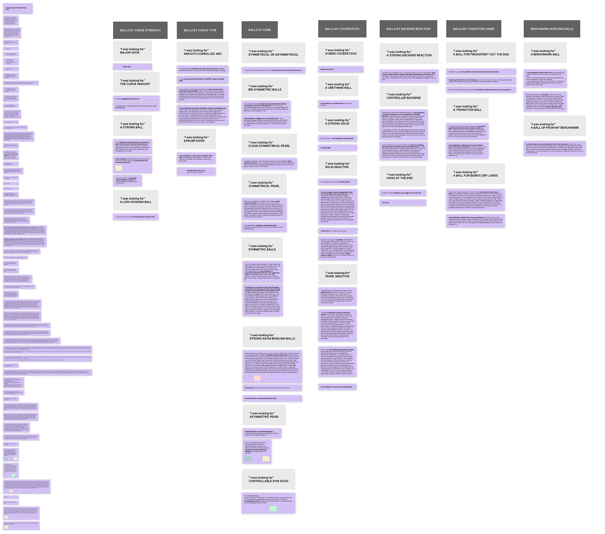
Users were already organizing bowling balls into their own mental classification systems.
This revealed an opportunity to design navigation, filtering, and educational experiences around the language users naturally rely on when exploring products:
Related behavioral codes were synthesized through affinity mapping to surface broader behavioral patterns across the dataset.
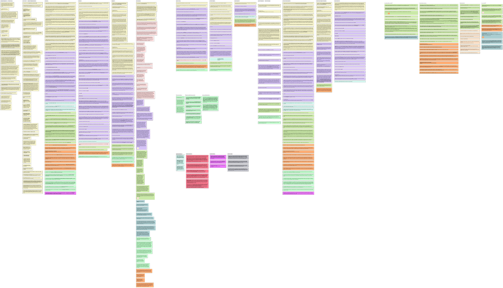
Bowlers think in lineup roles
Decision confidence is layered
Expectation gaps create uncertainty
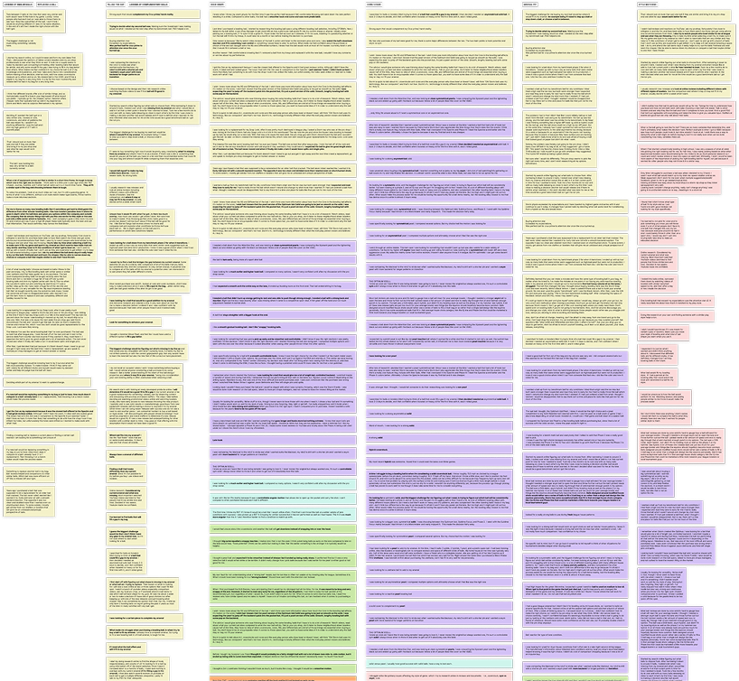
How bowlers think about lineup roles, fit, and ball relationships
"Will this meaningfully expand my lineup — or just duplicate what I already have?"
They struggle to understand what their current arsenal is actually doing — and whether a new ball truly changes anything.
Bowlers think in systems, not standalone products.
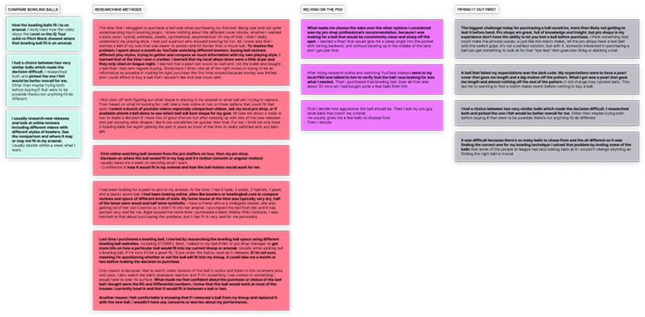
How bowlers build confidence before committing to a purchase
"How do I know this is the right ball?"
Too many sources, conflicting opinions, and no clear way to compare options apples-to-apples.
Decision confidence is built through layered trust — but the process is fragmented.
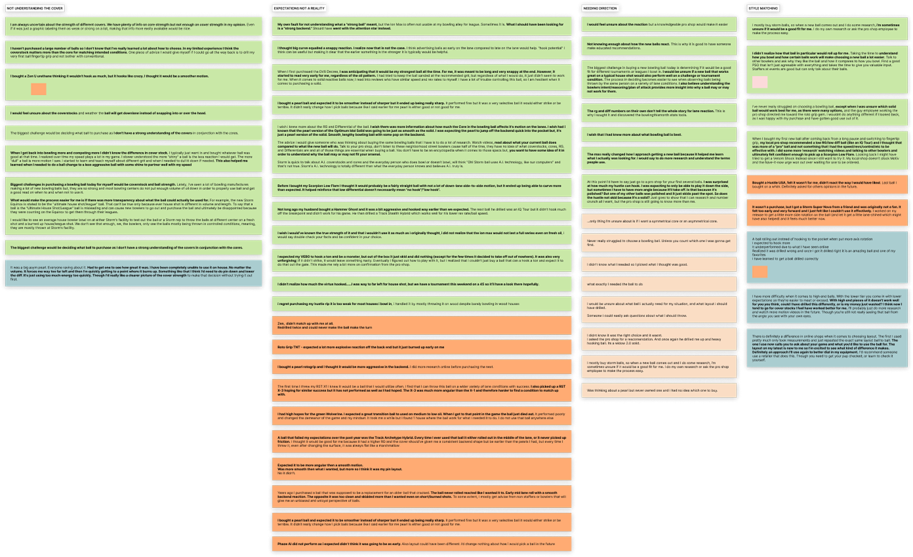
Where expectations don't align with real-world performance
"Will this actually do what I think it will?"
The ball doesn't behave the way they expected — and they can't tell if the issue was specs, layout, or lane conditions.
Expectation gaps create post-purchase uncertainty and erode trust.
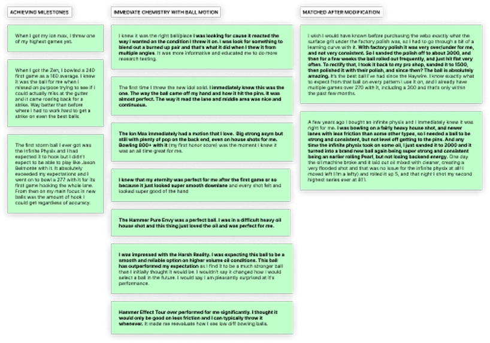
Moments where bowlers feel like they got it right
"Did I make the right decision?"
They often can't clearly explain why the ball worked — making that success difficult to replicate in future decisions.
Positive ball experiences become emotional trust anchors that shape future buying behavior.
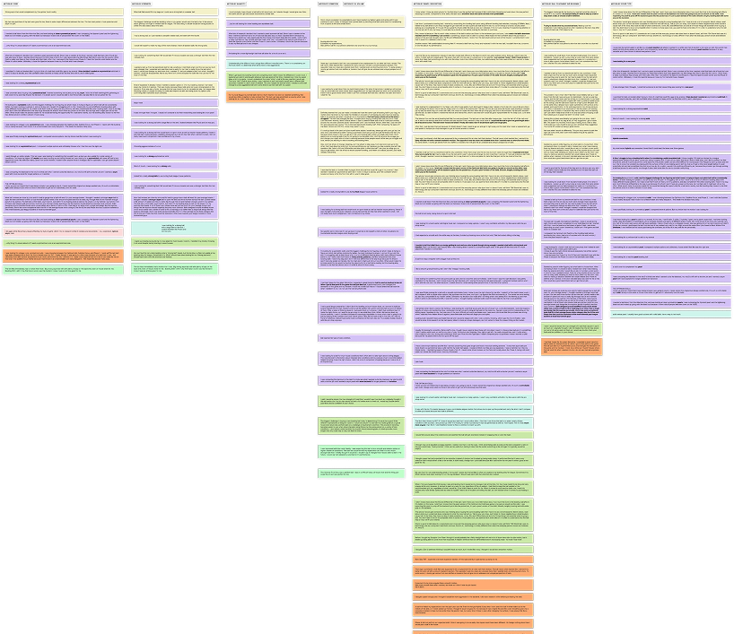
How bowlers try to predict ball motion before ever throwing it
"What will this ball actually do?"
Motion language is inconsistent, specs interact in complex ways, and expectations often don't match real-world ball behavior.
Bowlers rely on overly simplified mental shortcuts to predict motion — but those models often break down in real use.
Behavioral themes revealed broad patterns across the dataset, but interviews, personas, and journey mapping helped uncover the human stories, decision logic, and emotional friction behind those behaviors.
Interviews were conducted to probe these themes more deeply, uncovering the reasoning, personal stories, and decision-making logic that broad survey responses alone could not fully explain.
Regional Managers produced some of the richest discussions because they:
Participants were selected based on:
Semi-structured interviews were designed to probe the recurring themes uncovered in earlier synthesis, exploring how bowlers think, compare, trust, struggle, and imagine a better buying experience.
How bowlers think about lineup construction, ball roles, gaps, replacements, and motion expectations.
How bowlers compare options, weigh tradeoffs, and ultimately commit to a purchase.
What information sources bowlers rely on, how they compare content, and what tools help (or fail) during research.
How expert influence shapes decisions, validates assumptions, or introduces doubt.
Moments where ball performance didn't align with expectations — and how that changed future decision-making.
What bowlers wish they could see, understand, or do differently before making a purchase.
Interviews added human depth to the themes, revealing how bowlers navigate uncertainty, build confidence, interpret motion, and rely on external guidance in real decision-making moments.
"Some guys walk in looking to fill a gap. Others just want to see their ball hook more than their buddy's."
"People use buzzwords they've heard — but they don't always apply to their style."
"The kids will say, 'I want the ball to do that shape,' and I have to explain that stronger doesn't mean snappier — it means earlier."
Many bowlers begin with a strong idea of what they think they need, but that confidence is often built on incomplete understanding, borrowed language, or over-simplified assumptions about how ball motion actually works.
"They'll hear one phrase — like 'great for slow speed players' — and that's what hooks them."
"It's like fishing — if the word fits how they see themselves, they bite."
"I can't really replicate what I see. No matter how good you think you are... you're not a professional for a reason."
"Same bowler, different balls. That helps me actually understand how they compare."
Research content influences decision-making quickly, but without relatable context or clear comparison frameworks, bowlers often struggle to determine whether what they're seeing actually applies to them.
"I'd bet 99% want to throw the ball first rather than taking a blind shot in the dark."
"Seeking the advice from those that know more than you — that's probably the number one thing that helps you get close to the right path."
"My dad knows my game...he'll just say, 'That one's not gonna match up.'"
"All the info was there. I was just wrong."
Confidence is rarely built through a single source — bowlers stack multiple signals, opinions, and experiences together in an attempt to reduce uncertainty before buying.
"They bring in a ball they bought online and a layout they picked — and it's on the PSO to say, 'This probably won't work for you.'"
"I ask the shop what they think, and they'll say, 'Yeah, that one's been better for most people.'"
"Seeking the advice from those that know more than you..."
Confidence is rarely built through a single source — bowlers stack multiple signals, opinions, and experiences together in an attempt to reduce uncertainty before buying.
The interview insights exposed recurring themes around comparison behavior, trust, uncertainty, and ball motion understanding. Personas were then developed to translate those themes into concrete user archetypes that could be mapped across the full buying journey.
"I want to make sure this actually fills a gap in my arsenal."
Build a complete arsenal with intentional role-based ball choices
Hard to understand how a new ball compares to what he already owns
"I just want something that will hook...I don't know what any of this means."
Find a ball that works without needing to understand advanced specs
Confused by technical terminology and style mismatch risk
"I want my first real hook ball."
Experience meaningful hook and feel like he's leveling up
Doesn't understand ball motion or what makes one ball stronger than another
"I know the role I need — I just need the right ball."
Find a highly specific performance fit for competitive play
Too many similar options create decision overload
To understand how these behavioral patterns unfold across the buying journey, each persona was mapped across moments of awareness, research, evaluation, and decision-making to surface emotional shifts, friction points, and design opportunities.


The personas and experience maps revealed recurring friction across the buying journey — from uncertainty around ball motion and lane conditions to comparison overload and lack of confidence in decision-making.
The following opportunity areas and "How Might We" questions were created to guide future ideation and product direction.
Bowlers struggled to connect specs, motion descriptions, and real-world lane behavior. Many relied on vague or borrowed terminology that didn't always align with actual fit.
More advanced bowlers struggled less with "what is this ball?" and more with "how is this meaningfully different from what I already own?"
Confidence was rarely built through one source. Bowlers layered reviews, demos, PSO advice, comparisons, and gut feel to reduce uncertainty.
Many bowlers struggled to identify or describe the environments they regularly bowl on, making ball selection difficult from the start.
Interviews consistently revealed that PSOs still act as translators between product information and personal fit.
The research revealed broader gaps in how bowling ball motion was described, compared, and understood across the buying experience.
While bowlers regularly searched for reactions like "smooth," "angular," or "clean," there was no consistent framework for categorizing or comparing bowling balls by reaction type.
This led to the development of a scalable ball reaction design system built around shared motion language, comparison logic, and reaction-based classification.
.png)
Defined the overall visual shape of ball motion — from smooth, blended reactions to high-angle skid-flip motion.
This created a shared framework for discussing backend shape without relying on inconsistent buzzwords or vague comparison language.
.png)
Established where the ball begins reading the lane, helping bowlers differentiate between early traction, benchmark reads, and delayed backend motion.
This helped connect lane conditions and oil volume to reaction timing in a more understandable way.
.png)
Translated technical friction response behavior into more intuitive phrases bowlers already use in conversation — like "Smooth Off The Spot" or "Responsive To Friction."
This created a clearer bridge between technical ball motion and real-world player language.
.png)
Combined motion shape, hook timing, and friction response into higher-level ball archetypes that could support browsing, comparison, pairing logic, and future recommendation systems.
This created one of the first scalable reaction-based classification frameworks for organizing bowling balls by motion type instead of only technical specs.

As the framework was applied across the product catalog, consistent behavior relationships began emerging between shape, friction response, and timing characteristics.

Skid flip balls consistently align with faster friction responses while smoother shapes aligned with slower friction responses.
| Motion Shape | Blend | Controlled | Moderate | Quick | Immediate | Hook Timing |
|---|---|---|---|---|---|---|
| Smooth | ✅ | ✅ | ⚠️ | ❌ | ❌ | Early |
| Round | ✅ | ✅ | ✅ | ⚠️ | ❌ | Early → Midlane |
| Arc | ❌ | ✅ | ✅ | ✅ | ⚠️ | Midlane |
| Angular | ❌ | ❌ | ⚠️ | ✅ | ✅ | Midlane → Late |
| Skid Flip | ❌ | ❌ | ❌ | ✅ | ✅ | Late |
Once the framework established a consistent language for ball motion and comparison, it became a scalable foundation for multiple tools, educational systems, and product experiences across the ecosystem.


Instead of relying purely on technical specs, product pages began incorporating reaction-based classification, player-fit guidance, pairing logic, and motion visualization systems built directly from the framework.

The original matchmaker relied heavily on technical bowler specs and generalized filtering logic, creating friction for users who didn't fully understand their game, equipment, or reaction needs.
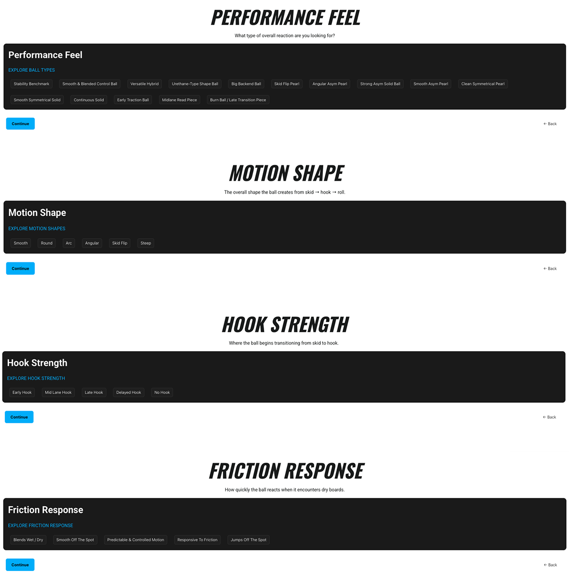
Instead of requiring bowlers to understand technical specs upfront, the redesigned experience guided users toward shared reaction goals and motion archetypes using terminology grounded in real bowling language.
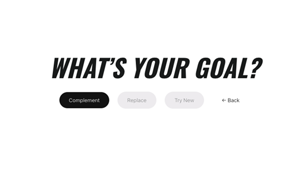
The recommendation logic was rebuilt around the three primary decision mindsets identified in the research: replacing an existing ball, filling a gap in an existing arsenal, and trying a different reaction shape. This allowed recommendations to become more contextual instead of purely spec-driven.
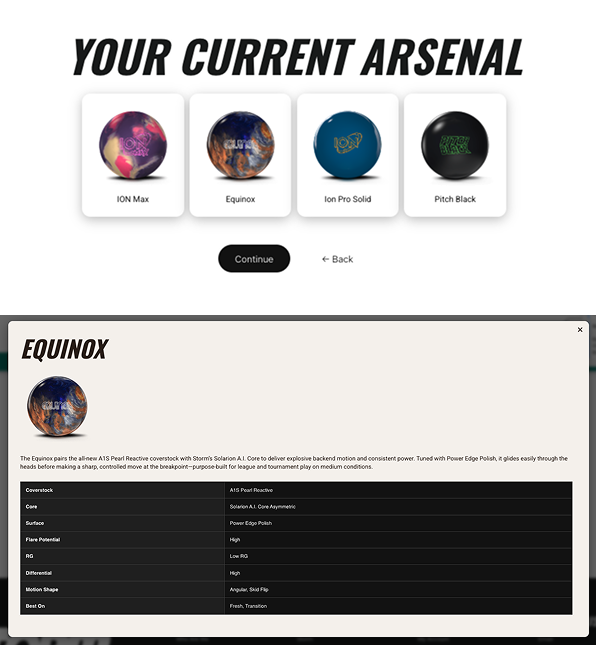
To improve recommendation accuracy, the matchmaker incorporated existing equipment context into the decision process. Instead of recommending balls in isolation, the system evaluated new options relative to a user's existing arsenal — avoiding smoother, earlier, stronger, or more angular recommendations based on what they already throw.
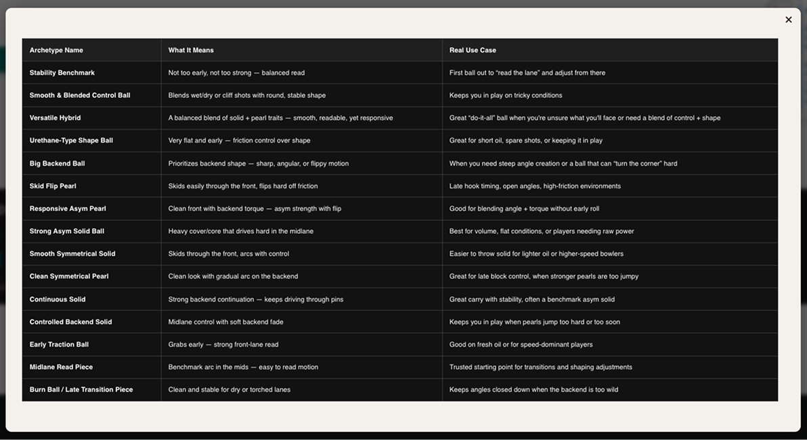
The redesign also introduced deeper educational pathways directly within the recommendation experience, allowing users to explore why specific balls were recommended and how different reaction characteristics related to their goals.
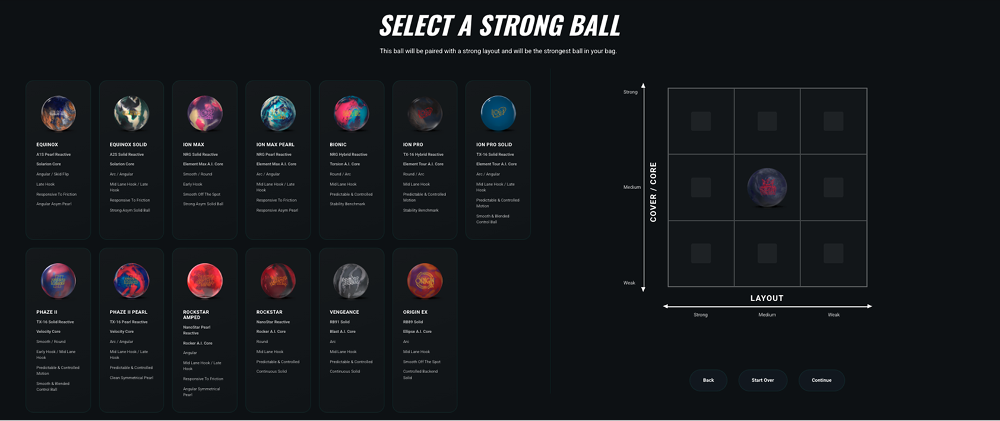
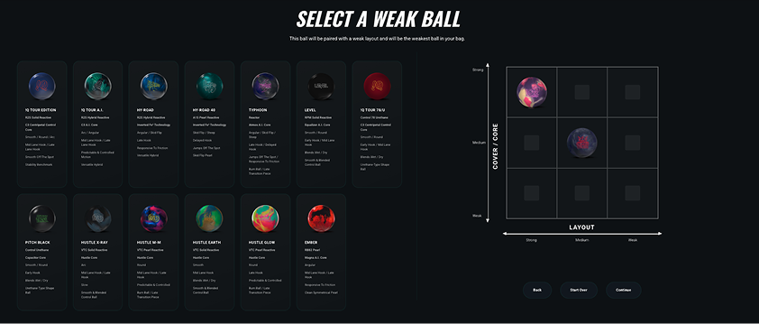
The Arsenal Builder translated Storm's existing arsenal matrix philosophy into a more guided and understandable selection experience using the shared reaction language established through the ball reaction framework.
The experience used the reaction framework to control which bowling balls appeared at different stages of the matrix process.
The shared motion framework created a more consistent way to organize and categorize bowling balls across the matrix experience.
The project helped translate an expert-driven internal framework into a more approachable and functional experience for bowlers navigating arsenal decisions.
The shared reaction framework also created new opportunities for browsing and comparison by allowing bowlers to navigate equipment by reaction type instead of relying only on coverstock names, release dates, or brand familiarity.


The framework introduced navigational pathways built around reaction archetypes such as:
This allowed bowlers to browse equipment using the same motion language commonly used in real bowling conversations.
Instead of forcing users to interpret technical specs in isolation, the system surfaced reaction shape, hook timing, and friction response directly within browsing experiences and product cards.
This created a more understandable comparison process across similar-looking products.
Because the same classification framework propagated across navigation, product pages, filtering systems, and recommendations, users could build more consistent mental models as they moved through the ecosystem.
This helped reinforce reaction terminology through repeated contextual exposure instead of isolated technical education.
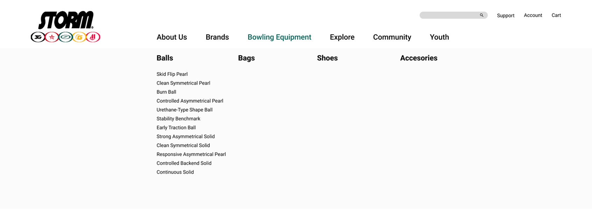
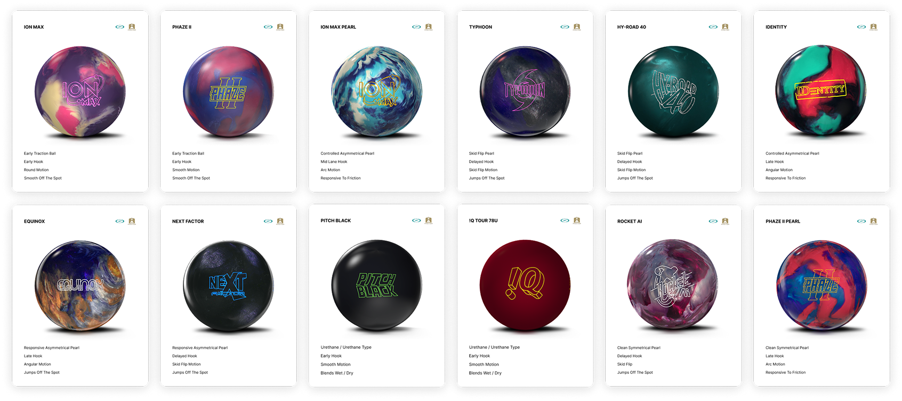
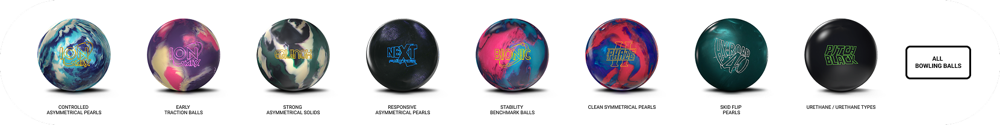
This introduced a browsing model that is largely absent across the bowling industry, where equipment is typically organized by release date, coverstock, or manufacturer naming conventions rather than reaction behavior.
The research and resulting design systems established a scalable foundation for how bowling ball motion could be described, compared, and operationalized across the ecosystem. Several systems, including the redesigned Matchmaker experience, moved into implementation and testing environments, while broader validation and organizational rollout remained ongoing.
This work influenced:
Rather than functioning as isolated deliverables, the work established a shared interaction language capable of supporting future educational, recommendation, and comparison experiences across the platform.
Beyond the research and systems work — here's the other high-impact work I contributed across the Storm platform.

Custom launch page with GSAP motion and product storytelling.
Interactive product experience with scroll-driven animation.
Responsive landing page built for a seasonal product release.
Full-page campaign experience built around a new ball line.
Animated hero section with motion-driven product reveal.
Limited edition release page with countdown and launch sequence.
Signature series page with athlete spotlight and product detail.
Seasonal campaign landing page with editorial layout and motion.
Cross-linked product launch experience with comparison tools.
High-impact release page with video background and GSAP scroll effects.
Core Web Vitals · Asset Optimization · Load Performance
Before

After

REST APIs · Dynamic Content · Custom JavaScript
Building connected experiences through external APIs, dynamic content feeds, interactive tools, and custom JavaScript implementations across the Storm ecosystem.

Design Tokens · UI Patterns · Component Systems
Reusable design standards, UI patterns, and front-end systems that improved consistency across products, pages, and future implementations throughout the Storm platform.
CMS Migration · CDN Integration · Front-End Refactoring
Supported the transition to a new CMS architecture — restructuring front-end assets, integrating CDN-based media delivery through DigitalOcean Spaces, and maintaining consistency across migrated experiences.
Restructured and migrated front-end assets to align with the new CMS architecture.
Integrated DigitalOcean Spaces for optimized, CDN-based media delivery across the platform.
Updated templates, components, and page structures to align with the new platform architecture.
Ensured visual and functional consistency across all migrated pages and experiences.
Alongside my day-to-day responsibilities of maintaining and developing the Storm website — including product launches, landing pages, educational experiences, and broader front-end platform work — I led a large-scale UX research initiative focused on understanding what bowlers were actually looking for from the digital experience.
What began as research into website expectations and bowling ball buying behavior ultimately expanded into broader systems for education, comparison, motion language, and decision support across the Storm ecosystem.
The work helped establish more scalable ways to describe ball motion, support arsenal-building decisions, and connect technical bowling concepts to more understandable user experiences.
And while many of these systems continue to evolve, the project reinforced the value of combining UX research, systems thinking, front-end development, and domain expertise into scalable product experiences and shared motion language across the ecosystem.
Copied to clipboard!